概要
Abstract
本研究では，Transformerベースのオフライン強化学習のロバスト性を検証する．オフライン強化学習のための状態データにノイズを加えて訓練を行い，ノイズ下訓練での性能を評価する．評価実験では，4種類のAtariゲーム（Breakout，Pong，Qbert，Seaquest）に関して，5つの評価テスト（クリーン，ガウシアン，ショット，インパルス，スペックル）におけるスコアを比較する．実験結果より，通常訓練（クリーン）に対する全てのノイズ評価テストでスコアが低下した．一方，訓練時にノイズ系によるデータ拡張訓練を導入することでスコア向上の傾向が確認された．
研究背景
- Decision Transformer に対するロバスト性検証は未確認
- ゲームタスクへ混入可能性のあるノイズ系を対象（ぼかし，天候，デジタル系は除外）
Atariゲームにおける深層強化学習では敵対的摂動への脆弱性が報告されている．本研究では，自然環境で想定されるランダムノイズにも注目し，ロバスト性を向上させる手法を検討する．
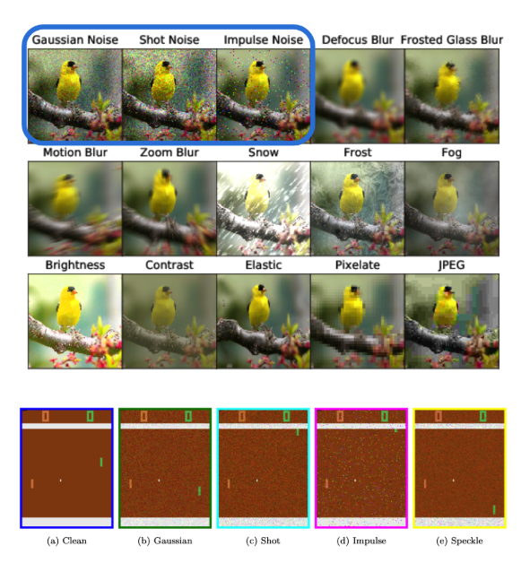
提案手法
- 通常訓練とデータ拡張訓練（各訓練は約 20 000 試行 ≒ 4 000 × 5 epoch）
- 評価テスト（各テストは 50 試行 ≒ 10 × 5 epoch）
※ノイズ比率訓練：評価テストは 25 試行 ≒ 5 × 5 epoch
実験結果
脆弱性検証（定性評価）
Clean 以外のノイズ系テストでは，エージェントが学習しきれていない．
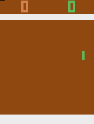
Clean
Clean

Gaus

Shot
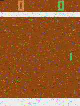
Imp
Imp

Spe
脆弱性検証（定量評価）
- 通常データ訓練モデルに各種ノイズを付与するとゲームスコアが大幅に低下（ノイズに対して脆弱）
- スコア分布も大きく悪化
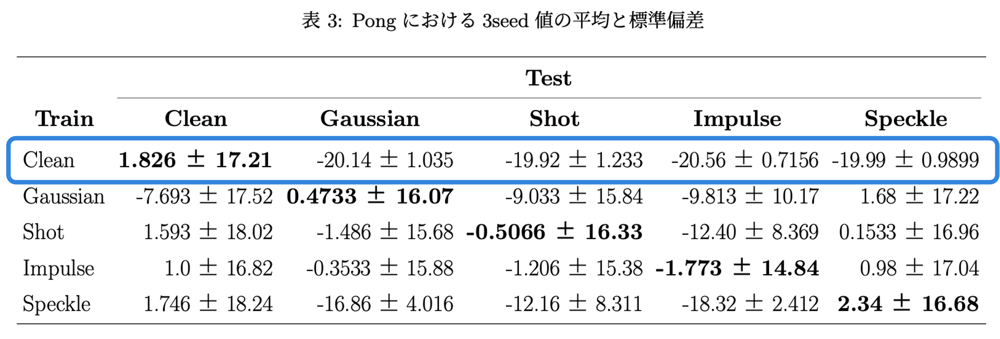
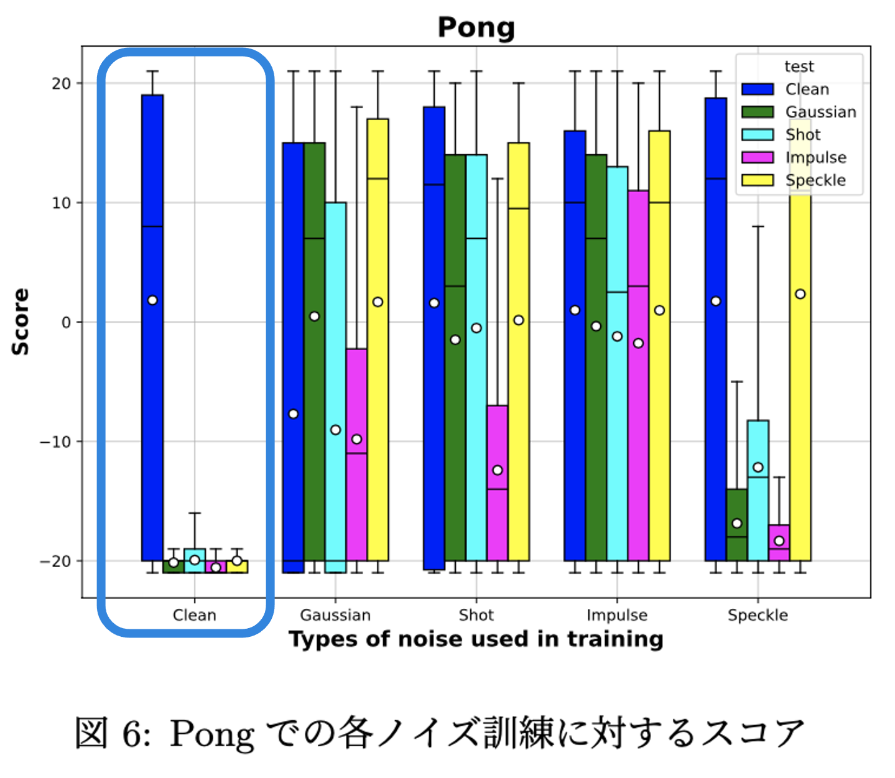
ロバスト性検証（定性評価）
- 各訓練データセットに対応するテストで良好なスコアを獲得
- Clean 以外のノイズテストでも学習が確認できる
Clean
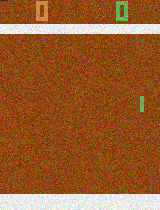
Gaus
Gaus
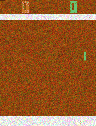
Shot
Shot
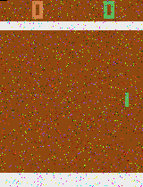
Imp
Imp
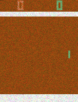
Spe
Spe
ロバスト性検証（定量評価）
- 訓練したノイズデータセットに対応するテストが最高スコア（ノイズに対してロバスト）
- 他ゲームタスクでもノイズデータセット訓練でスコア向上傾向
- 通常訓練と比較してスコア分布が全体的に向上
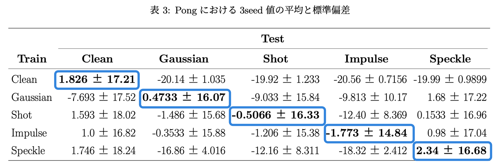
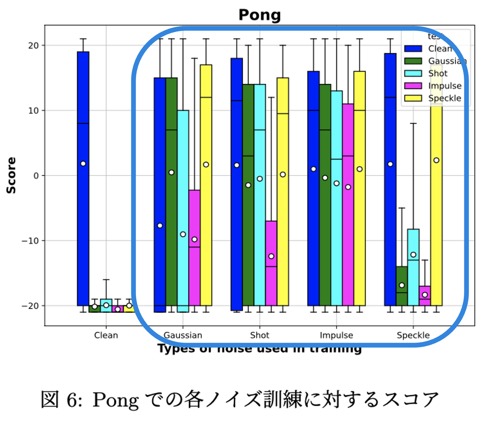
まとめ
- Common Corruption における各種ノイズテストで脆弱性を確認
- データ拡張訓練によってロバスト性が向上することを実証